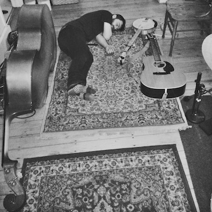
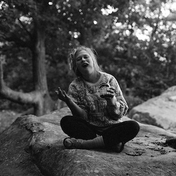
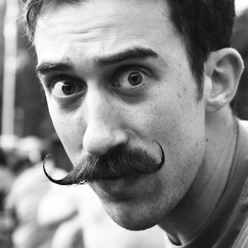

The Cambridge based Americana trio plays original pieces written by vocalist Gillian Grogan that range from bluesy introspections to contemporary tributes to the traditional folk ballads of the British Isles. These three make music where Americana meets folk and thrives in soul. The band will release their first EP this coming June, 'Redbird.'
- 
Otto once got sick.
He never got sick again.
He now plays the bass.
- 
Gillian " all the snacks " Grogan
...but my mama calls me trouble.
- 
Chris: just banjo enough.
Honeyfoot may have a new name, but these string enthusiasts have been picking together since 2014, first, as Goldie and the Wolves and again in the fall of 2015 as Gillian Grogan & Friends on the heels of her national tour.
Gillian and Otto (upright bass) bonded over their mutual disbelief at their acing 2.005--MIT's infamously aggressive 'heat transfer' class. She met Chris 'Chrono' (guitar, banjo, mando= all the strings) at about the same time and responded immediately to his handlebar moustache. The trio look forward to a busy summer and fall playing shows and festivals in the New England region.
Just six happy honeyfeet to Honeyfoot--that's less than a centipede, more than bumblebee, but who's counting.